The Rarest Thing Underfoot
There is a place in the American West where, if you descend a mile into the earth — past limestone laid down by shallow Cambrian seas, past sandstone from ancient desert dunes, past layer after layer of sedimentary rock recording 500 million years of history — you finally reach the bottom. The walls close in. The river runs dark and fast. And the rock changes.
At the bottom of the Grand Canyon, where the Colorado River has spent six million years cutting through northern Arizona, the sedimentary layers end and something older begins. The rock turns dark — nearly black in shadow, streaked with veins of pink granite. It is no longer layered. It is folded, banded, crystalline. Geologists call it the Vishnu Basement Rocks. It is 1.7 to 1.84 billion years old — rock that predates the dinosaurs by over a billion years. Standing at river level in the Inner Gorge, you are touching the basement of the continent — the ancient foundation on which everything else was built. The canyon did not create that rock. It only revealed it.
The Grand Canyon is one of a small number of places in the contiguous United States where Precambrian basement rock reaches the surface. The others are scattered, isolated, and almost all of them required something dramatic to expose them — a mile of canyon cutting, a glacially scoured uplift, a dome pushed skyward by deep crustal forces. In Canada, Precambrian rock is everywhere; the Canadian Shield covers half the country and the basement lies at the surface across millions of square miles. But in the lower 48 states, the basement is almost universally buried beneath the sedimentary platform of the Midwest, beneath the coastal plain of the East, beneath younger rock stacked up by hundreds of millions of years of deposition. Finding it at the surface is the exception, not the rule. The full list of places where it can be touched is short: the Grand Canyon inner gorge. The Adirondacks. The Minnesota River Valley. The Black Hills. The Front Range of Colorado. The Llano Uplift of Texas. The Blue Ridge of Virginia.
And that last entry — the Blue Ridge of Virginia — is a hidden treasure that can be accessed from country roads in Montgomery County.
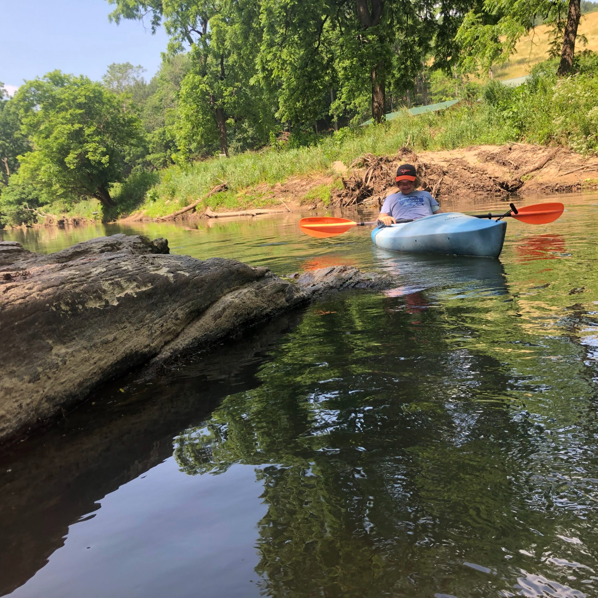
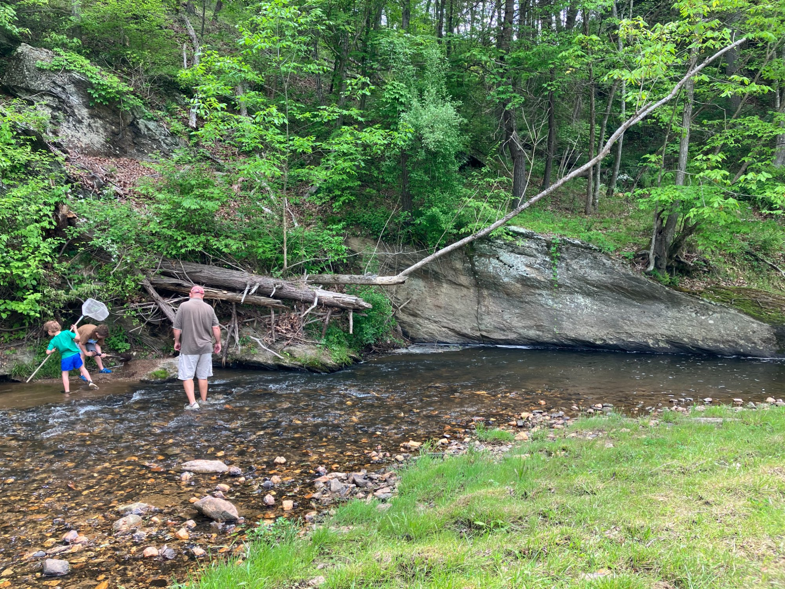
In the Blue Ridge of Virginia, a thrust fault pushed billion-year-old basement rock upward and a small river stripped the overburden away. No canyon was required. No expedition. The rock is at the surface along a country road in Montgomery County, at the level of a river you can wade across in summer. It is 1.1 to 1.3 billion years old — the same category of material entirely: Precambrian basement, the continent's own foundation, exposed at the surface in a place where nothing in the surrounding landscape suggests it should be there.
Same category of rock. One required a mile-deep canyon. The other required a country road.
The fault responsible has no famous canyon named after it. No national park. Just a country road in Montgomery County and a river running over rock that is older than anything alive.
1.1 – 1.3 billion years old · Mesoproterozoic · Riner, Virginia
This is the story of how billion-year-old basement rock ended up at the surface of a Montgomery County country road. It requires going back to a time when the only life on Earth was tiny bacteria building layered reefs in ancient oceans.
Continue reading
I — The Rock
The road comes off Route 8 and drops south. Laurel Ridge Mill Road follows the land the way old roads do — not cutting through terrain but tracing the path of least resistance, following the creek, bending with the ridge. When you walk the property here, in the floodplain where the Little River curves through, you are crossing the Fries Thrust Fault. You just need to know to look for it.
At the water's edge and along the exposed banks, the rock is dark blue-gray, banded, heavy. It does not look like the sandstone or limestone most people associate with Virginia. It looks older. It is older. By a factor of nearly four, it is older than anything the word "Appalachian" implies. This is the basement — the ancient foundation on which the entire mountain range was later built — exposed at the surface by a fault that pushed it upward and a river that stripped the overburden away. You can touch it. It is here because of what happened to this piece of the Earth a billion years ago, and the story of how it got here is one of the most consequential in North American geology.
The land itself records it. The Little River, running through these meander loops, crosses the fault trace twice — once through each bend between the Route 8 and Brush Creek bridges. The fault runs through the fields and the floodplain. It is not an abstraction. It is a structural boundary underfoot.
This is what 1.1 billion years looks like in your hand. The rock is gneiss — dark blue-gray at its base, banded through with pale cream and pink where feldspar crystals have grown and fractured. The banding is not sedimentary layering. It is foliation — the physical record of compression so extreme, sustained over so long, that the minerals within the rock reorganized themselves into parallel bands. You are looking at the texture of a mountain range that no longer exists.
The gray matrix is dense with biotite — a dark mica mineral — giving the rock its characteristic blue-gray cast in shadow and a faint metallic shimmer in direct light. The pale zones are feldspar-rich, coarser-grained, with blocky crystal faces that catch light at sharp angles. Where the rock has broken fresh, those faces are white and glassy. Where it has weathered, they go pink and ochre.
This specimen came from along the Little River on Laurel Ridge Mill Road. It is not unusual rock for this formation. It is exactly what the Fries Fault exposes at the surface here — the deeply eroded root of a Himalayan-scale mountain range, held in one hand.
Not all the rock along the Little River is the same. Whitmarsh (1994) — the defining structural study of this fault zone — identified two distinct gneiss units on either side of the fault trace, and one of his two headline findings was establishing the relationship between them.
To the south of the fault trace is the Little River Gneiss: the rock that was caught directly in the fault's shear zone as the Blue Ridge was thrust westward. This is the rock most visible at river level along Laurel Ridge Mill Road. To the north is the Pilot Gneiss: the same Grenville-age basement rock, the same billion-year age, but outside the fault's teeth — coarser, blockier, less deformed. Where the Little River crosses the fault trace through both meander loops, you are crossing the boundary between these two units. The river did not create that boundary. The fault did, roughly 480 million years ago.
Standard gneiss forms deep in the crust under heat and pressure, producing the coarse, thick banding visible in the specimen photo. But the Little River Gneiss was not simply cooked — it was also caught in the moving fault zone, and Whitmarsh formally described it as a mylonitic gneiss.
Mylonite — from the Greek for "mill" — is rock that has been ground and sheared while still hot and deep in the crust. Rather than fracturing, the minerals flowed under the sustained stress of fault movement, stretching into thin ribbons and fine-grained sheets. The result is a rock that looks fundamentally different from standard basement gneiss: instead of thick, blocky bands, the banding becomes finer, more continuous, almost streaky — sometimes described as having a wood-grain or pulled-taffy appearance. The rock tends to be fissile, breaking into thin plates along the shear planes rather than in irregular chunks.
This is the physical signature of fault motion preserved in stone. When you see the streaky, platy rock at the river bank, you are not just looking at old crust — you are looking at the record of the fault itself, written into the mineral structure of the rock at the moment the Blue Ridge was moving.
Along the banks and in the exposed cuts near the river, much of what you see is not solid rock at all — it is a material that looks like compacted dirt, crumbles in your hands, yet still shows the layering and banding of the gneiss it came from. This is saprolite, from the Greek for "rotten rock," and it is one of the more disorienting things you can hold.
The atoms in it are still 1.1 to 1.3 billion years old. The foliation — the parallel banding from the ancient compression — is still visible in it if you look carefully. Quartz veins still run through it as hard white ribs, because quartz does not weather chemically the way feldspar and mica do. But the feldspar and biotite that gave the gneiss its strength have been chemically transformed by millennia of slightly acidic groundwater seeping through the fault-fractured rock, converting those minerals into clay. The structure of the rock remains; the rigidity is gone.
The fault accelerated this process. The micro-fractures created by fault movement gave groundwater pathways deep into the rock, allowing chemical weathering to proceed far below the surface. In the Montgomery and Floyd County area you can dig down many tens of feet and still find saprolite before hitting fresh blue-gray gneiss. The fault that exposed the rock also began, slowly, to dissolve it. What looks like soil at the base of the bank is billion-year-old tectonic material in its final stage — still holding the shape of the mountain range that formed it, losing the last of its mineral cohesion to the Virginia climate.
II — Deep Time · 1.1 — 1.3 billion years ago
What did not yet exist when this rock formed:
Ocean basin formed when Pangaea broke apart
The Appalachian landform began forming ~480 million years ago, built on Grenville-age basement rock 1.1–1.3 billion years old
Continent took shape during Pangaea assembly
First vertebrates evolved in Cambrian seas
First arthropods colonized land
No soil, no roots, no vegetation anywhere on Earth. Before plants, the land was entirely bare rock and sediment.
World dominated by single-celled organisms
For the first 500 million years of Earth's history, nothing could see. Vision evolved during the Cambrian Explosion.
Nothing moved of its own will. Everything moved by currents or gravity alone.
Atmosphere had a fraction of today's oxygen. Breathable levels reached much later.
The Mesoproterozoic — what scientists call "The Boring Billion"
The sky was not blue. The atmosphere had oxygen, but only a fraction of today's levels — too thin to support an ozone layer thick enough to block ultraviolet radiation, too thin to breathe. The oceans were mostly anoxic below the surface, rich in dissolved iron and hydrogen sulfide. The shallow coastal waters were green and rust-colored, stained by iron oxides and the chemistry of a world without complex life to process it.
The land was bare rock and sediment. There were no soils — soil requires roots and organisms to form it, and there were none. There were no braided river banks held in place by vegetation, because there was no vegetation. Wind moved sediment freely across an entirely bare surface. No footprint was ever made on this land. No sound was made by anything that moved of its own will.
The dominant life form was stromatolites — layered mounds built by microbial mats, mostly cyanobacteria, growing in shallow water. They had been the dominant life form for a billion years already, and they would remain so. The fossil record of this period is so sparse and so unchanging that geologists named this interval "the Boring Billion" — roughly 1.8 to 0.8 billion years ago, a stretch of time in which oxygen levels barely changed, evolution seemingly stalled, and the planet sat in a long, quiet equilibrium.
The sun was about 85% as bright as it is today. The day was shorter — Earth rotated faster, so a day lasted roughly 18 to 20 hours. The moon was closer and the tides were higher. The planet was recognizably Earth in its physics but alien in every detail that makes Earth feel like home.
There were no plants — not even simple ones. The first land plants don't appear in the fossil record until roughly 470 million years ago — and those were simple, rootless, moss-like organisms clinging to wet rocks. Every continent on Earth looked like the surface of Mars: bare rock, bare sediment, mineral colors only. Nothing green existed anywhere on land.
This is when the rock along Laurel Ridge Mill Road formed.
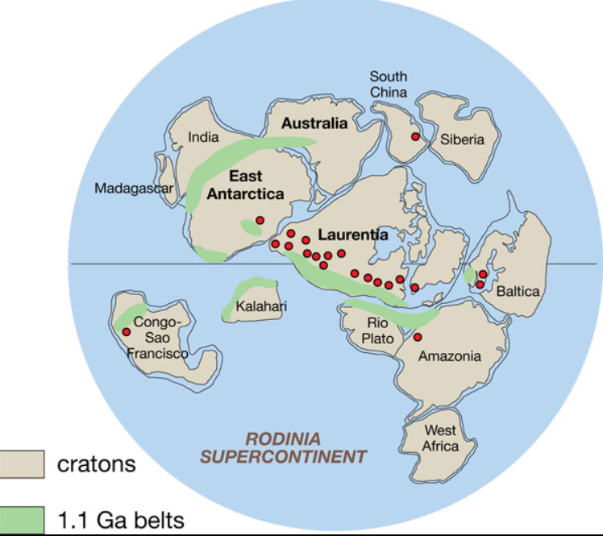
III — The Mechanism
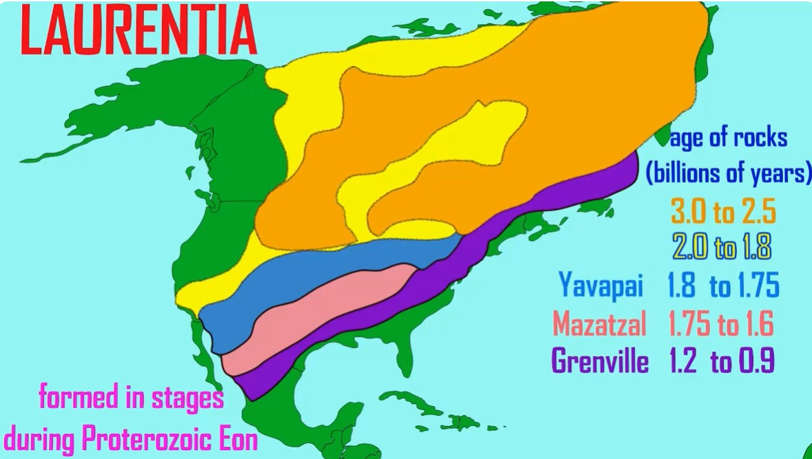
Click to watch on YouTube · The purple band (Grenville, 1.2–0.9 Ga) is the outermost growth ring — the rock exposed at the Fries Fault.
Image and video credit: Walter Jahn
Anyone with a passing interest in science has heard of Pangaea — the supercontinent where all the landmasses were joined together, where you could theoretically walk from North America to Africa. It existed from roughly 335 to 175 million years ago, and its breakup opened the Atlantic Ocean and set the continents drifting toward their current positions. Pangaea is the one that shows up in textbooks and documentary films. It feels ancient.
It is not nearly old enough.
To understand what follows, one more concept: Laurentia. Laurentia is the name geologists give to the ancient stable core of what would eventually become North America. It is not the same thing as North America — it is older, smaller, and far more fundamental. Geologists call it a craton: the thick, tectonically quiet, ancient foundation around which younger rock accretes over billions of years. Think of it as the original continent, onto which everything else was later added. When geologists talk about the eastern margin of Laurentia, they are talking about the edge of that original core — the boundary where new material was being added, where ocean was closing, where mountains were being built. The rock at the Fries Fault formed at exactly that margin.
The rock along Laurel Ridge Mill Road formed during the assembly of a different supercontinent entirely: Rodinia. It existed from roughly 1.2 billion to 750 million years ago — assembled by the same kind of continent-to-continent collision that built Pangaea, but 900 million years earlier. The collision that produced it — the Grenville Orogeny — built a mountain range comparable in scale to the modern Himalayas along what is now the eastern margin of North America. The rock exposed at the Fries Fault is the deeply eroded root of those mountains. By the time Pangaea was forming, Rodinia had already assembled, broken apart, and been gone for hundreds of millions of years.
When Rodinia broke apart, it opened an ocean. Not the Atlantic — that came much later. This was the Iapetus Ocean, a vast body of water that separated the fragments of Rodinia and eventually covered what is now the eastern United States. You have never heard of the Iapetus Ocean because it no longer exists. It closed. The closing of the Iapetus Ocean — as the landmasses converged again toward Pangaea — drove the Taconic Orogeny, which reactivated the Fries Fault and pushed this billion-year-old rock upward to where it sits today.
The sequence, in full: the rock forms during the Grenville Orogeny and the assembly of Rodinia. Rodinia breaks apart, the Iapetus Ocean opens. The Iapetus Ocean closes, driving the Taconic Orogeny, which reactivates the Fries Fault. The fault pushes the rock to the surface. Erosion strips the overburden away. The Little River cuts through. And here we are.
The ocean you have never heard of is why the rock is here.
A fault is any fracture in the Earth's crust along which two bodies of rock have moved relative to each other. A thrust fault is a specific variety formed by compressional forces — when two landmasses are being pushed together, the crust has nowhere to go but up. One slab of rock is driven up and over another at a low angle, typically less than 45 degrees from horizontal. The result is that older, deeper rock ends up sitting on top of younger, shallower rock — a reversal of the normal geological order that geologists call an overthrust.
Thrust faults differ from reverse faults primarily in the angle of the fault plane. Both involve compressional forces pushing one block upward, but a reverse fault does so at a steeper angle and the displaced rock is usually visible at the surface. Thrust faults are more subtle — the displacement can be enormous, sometimes tens or hundreds of kilometers of horizontal travel, yet the fault surface itself may be nearly flat.
Because of this low angle, thrust faults often do not reach the surface at all. Of the six known thrust faults in the area represented on the Riner Quadrangle geologic map, only four surface: the Fries, Poor Mountain, Peak Creek, and Roanoke Valley faults. Two others — the Saltville and Pulaski faults — underlie the surface rocks entirely, invisible except to those who know how to read the rock record.
By itself, a thrust fault is not unusual. The Appalachian region is laced with them, products of the repeated continental collisions that built and rebuilt the eastern margin of North America over hundreds of millions of years. What makes the Fries Fault remarkable is not that it is a thrust fault but what it exposes, where it runs, and how old it is.
The Fries Thrust Fault is one of three major fault zones that run the full length of the Virginia Blue Ridge, forming the structural backbone of one of the state's five distinct physiographic regions. The Blue Ridge Province stretches from Pennsylvania to Georgia in a narrow, ancient corridor that includes Shenandoah National Park, the Blue Ridge Parkway, the Appalachian National Scenic Trail, and the Great Smoky Mountains. The Fries Fault runs along its western edge near its southern extent, in the area around Riner in Montgomery and Floyd Counties.
The exposed rock at the Fries Fault is among the oldest material found anywhere in Virginia, and one of only a small number of places in the continental United States where Precambrian rock of this age is visible at the surface. The Grand Canyon's inner gorge, the Minnesota River Valley, and the Adirondack Mountains are the most familiar comparisons; the Fries Fault belongs in that same category.
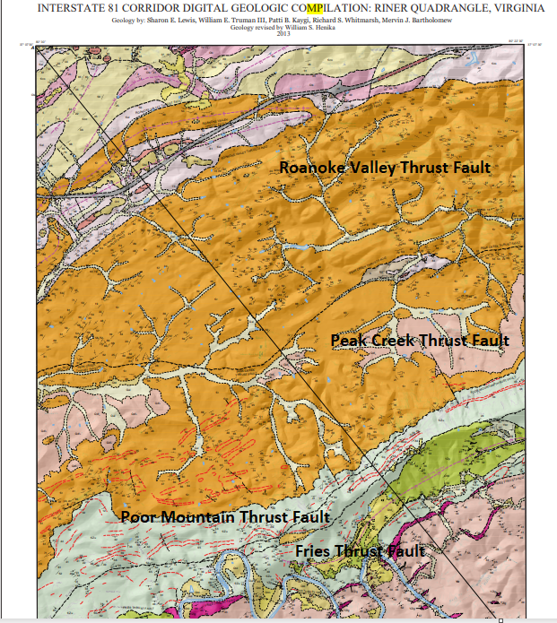
Riner Quadrangle geologic map showing the six thrust faults of the area. (Henika et al., Virginia Tech)
The rock exposed at the Fries Fault is gneiss — a coarse-grained, banded metamorphic rock that forms under conditions of extreme temperature and pressure. When rocks are buried deep in the Earth's crust — typically 10 to 30 kilometers down — they do not melt. Instead, they recrystallize in the solid state, their mineral assemblages reorganizing into new configurations stable under the new conditions. This process is called regional metamorphism.
Starting from shale, the metamorphic progression runs: shale → slate → phyllite → schist → gneiss. Each step represents higher temperature and pressure and more complete recrystallization. Gneiss, at the end of the progression, is the highest-grade regional metamorphic rock, characterized by a pronounced banding — called foliation — that reflects billions of years of compression.
The gneiss at the Fries Fault formed this way during the Grenville Orogeny, as the collision drove rocks deep into the crust. When the mountains above them eroded away over hundreds of millions of years, and when the Fries Thrust Fault later pushed the basement rocks upward and over younger material, those ancient gneisses were finally brought back to the surface. The gneiss here is technically an orthogneiss — derived from igneous protoliths rather than sedimentary ones — but the metamorphic conditions are the same: extreme heat and pressure deep in the collision zone.
Now consider what came after this rock formed — and how much later:
This is the world the rock at your feet formed in.
IV — The Scale
The Fries Thrust Fault does not announce itself. It runs underground for most of its length — buried beneath younger rock, invisible at the surface. But in the Riner area of Montgomery and Floyd Counties, erosion has stripped enough of the overburden away that the fault boundary reaches the ground. The Little River — running through this land along Laurel Ridge Mill Road — cuts directly through that exposure zone, crossing the fault trace twice as it bends through two meander loops between the Route 8 and Brush Creek bridges.
This is what makes the local geography significant. Not the river itself, but what the river has done: cut down through hundreds of millions of years of accumulated rock until it reached the fault plane, and exposed, at water level and along the banks, gneiss that is 1.1 to 1.3 billion years old. The same rock that underlies the entire Blue Ridge province — the basement on which the Appalachians were built — is here at the surface. Touchable. Walkable.
The Little River exposure is one of three places along the 300-mile length of the Hayesville–Fries–Rockfish Valley fault system where Grenville-age gneiss reaches the surface and can be examined directly. Each sits at a different point along the same structural spine, and each tells the same story in the same rock.
At the northeastern end of the system, in Nelson County, Virginia, the Rockfish River has cut down through the Rockfish Valley fault zone — the Virginia segment of the HFRV — to expose Grenville-age biotite granitoid gneiss along its banks. This outcrop has been a William & Mary geology field site for over 25 years. The same mylonitic deformation documented at the Little River by Whitmarsh is independently documented here: the Rockfish Valley fault zone contains well-foliated porphyroclastic mylonite derived from Grenvillian biotite granitoid, the same fault process, the same age rock, 130 miles to the northeast. The outcrop requires active maintenance — Virginia's humid climate and vigorous plant succession conspire to cover fresh rock quickly, and geologists have resorted to power-washing it to keep it legible. No such intervention is needed at the Little River, where the active channel keeps the exposure clean.
At the southwestern end, in western North Carolina, the Hayesville fault — the southern continuation of the same system — exposes Grenville basement complex at the surface: grey, well-foliated gneissic to granitic units of quartz, biotite, and feldspar, identical in composition and origin to the rock at Riner. The fault here thrust Grenville basement westward over younger terranes during the same Taconic event that activated the Fries segment in Virginia.
The Riner exposure sits roughly in the center of this corridor — geographically and structurally. What distinguishes it is access. The Rockfish River outcrop is on private land or requires organized field trips; the Hayesville exposures are remote. The Little River crossing at Laurel Ridge Mill Road puts you at the fault trace with no expedition required. The rock is at the surface, in the river, on the bank. You are standing at one of three points along a 300-mile structural feature where the deep basement of the continent is within reach.
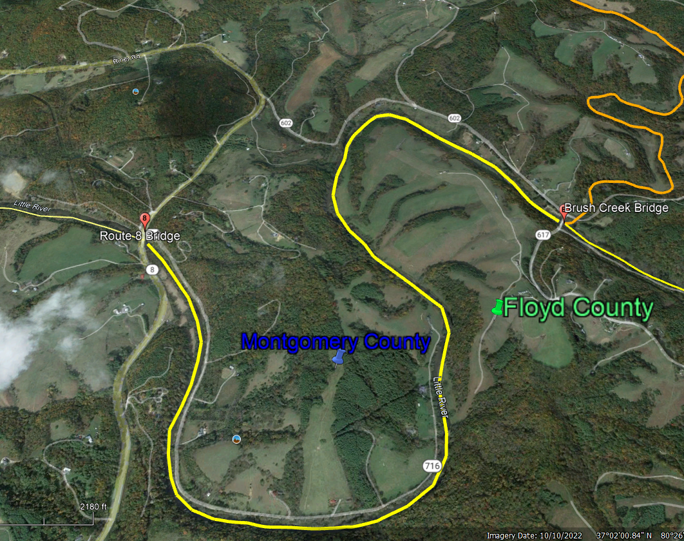
The fault's path through this area is documented on a state geological map of the Riner Quadrangle compiled by geologist Bill Henika, a Research Professor at Virginia Tech. An annotated version of this map shows the fault trace labeled clearly as the Fries Thrust Fault, running directly through the meander loops of the Little River.
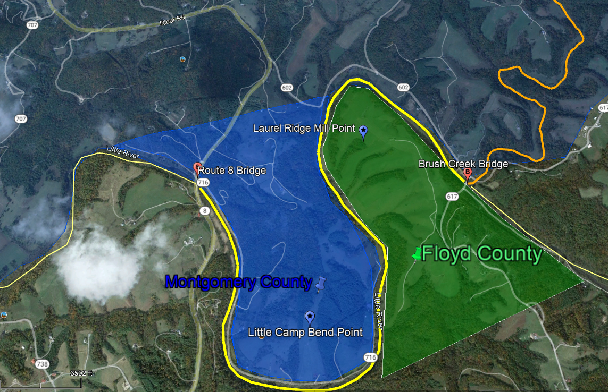
The two meander loops of the Little River — Floyd County loop (left) and Montgomery County loop (right). The fault crosses through both. (Annotated aerial)
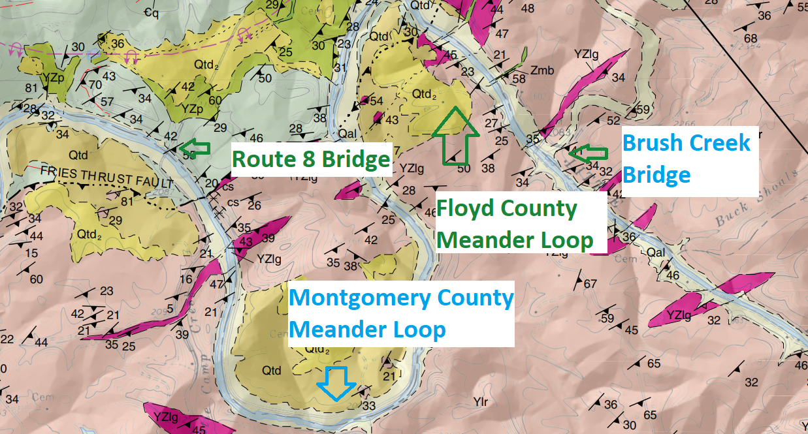
Annotated Riner Quadrangle geological map showing the Fries Thrust Fault trace through the Little River corridor. (Bill Henika, Virginia Tech)
On a geological map, the exposure shows as a narrow pink band threading through the Riner Quadrangle — narrow but continuous, marking the surface expression of rock that formed a billion years ago. On the ground, it is the rock beneath your feet.
The rocks exposed at the Fries Fault are not merely old. They are remnants of the edge of a supercontinent. Around 1.3 billion years ago, during the Proterozoic Eon, the landmass that would eventually become North America — called Laurentia — was involved in a massive continental collision that assembled a supercontinent known as Rodinia. The collision zone, called the Grenville Orogeny, built a mountain range comparable in scale to the modern Himalayas along what is now the eastern margin of the continent. The rocks exposed today at the Fries Fault are the deeply eroded roots of those mountains, brought back to the surface after more than a billion years underground by the thrust fault's action.
In other words, when you stand on the bank of the Little River in Riner and look at the exposed rock, you are looking at material that formed in the core of an ancient mountain range built during the assembly of a supercontinent that no longer exists.
V — The Science
The Fries Fault does not stand alone. It is the local expression of one of the great structural features of the eastern Appalachians: the Hayesville-Fries-Rockfish Valley fault system (HFRV), which runs the full axial length of the Blue Ridge from central Virginia southward through North Carolina. Every ridge, every overlook, every river crossing along that corridor sits above or beside this fault system. The Fries segment — the stretch through Riner and the Little River — is simply where the fault comes closest to the surface and reaches the ground.
The HFRV is, in a meaningful sense, the spine of the Blue Ridge. It divides the Grenville-age basement rocks of the province into two distinct massifs: the Pedlar Massif to the northwest and the Lovingston Massif to the southeast. These are not merely two rock bodies sitting side by side — they represent two crustal blocks that were separate landmasses before the Grenville collision welded them together roughly 1.1 billion years ago. The HFRV fault running between them is almost certainly the original suture line: the scar where those two blocks fused. It was later reactivated during the Taconic Orogeny (approximately 480 to 440 million years ago), when renewed compression along the Laurentian margin drove the fault back into motion and pushed the Little River Gneiss upward to its present position.
One other consequence of this fault's reach is worth noting. The New River — one of the oldest river systems in North America, flowing north and west across the broad Blue Ridge upland — follows the Fries Fault for a stretch of its path through this area. The fault that exposes billion-year-old rock along Laurel Ridge Mill Road also shaped the course of one of the continent's most ancient rivers.
Laurentia — the ancient craton at the core of North America — did not form all at once. It grew outward over billions of years in a series of distinct accretion events, each one adding a new belt of rock to the growing continent. Those growth stages are still readable in the ages of the rocks that make up North America's interior today.
The oldest material, aged 3.0 to 2.5 billion years, forms the core of what is now central Canada. Younger belts wrap around this core in successive rings: the Trans-Hudson belt (1.84–1.80 Ga), the Yavapai province (1.8–1.75 Ga), and the Mazatzal province (1.75–1.6 Ga). The outermost belt — the one that includes the Fries Fault — is the Grenville province, aged approximately 1.2 to 0.9 billion years. It runs along what was then the eastern margin of Laurentia: the collision zone. The rock at the Little River is the outermost growth ring of the original continent.
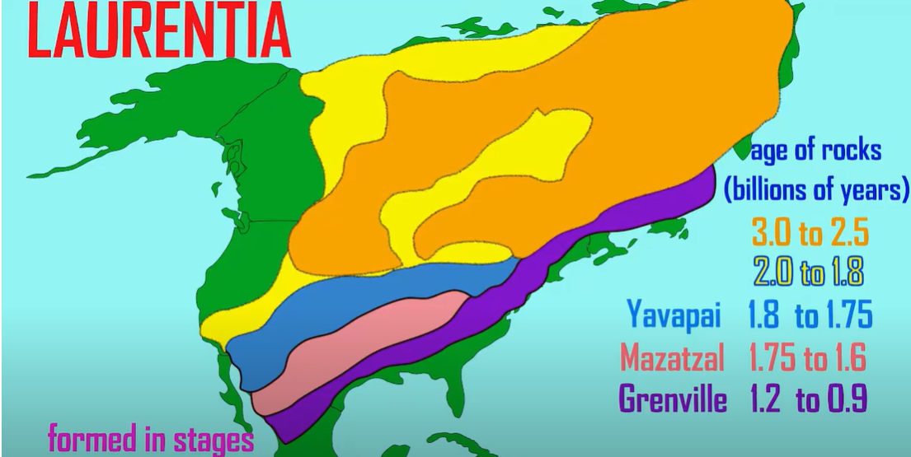
Laurentia craton formation sequence from 3.0 Ga to 0.9 Ga. The Grenville province (purple) — the zone of the Fries Fault — is the outermost ring.
The most precise published description of this specific fault zone comes from a 1994 Virginia Tech thesis by Richard Whitmarsh, who conducted detailed structural field work along the Fries Fault south of Riner. His definition remains the standard academic characterization of what is happening in the rock beneath the Little River:
"The Fries fault zone south of Riner, Virginia is marked by a ductile, greenschist-facies thrust that places Middle Proterozoic gneiss over deformed Late Proterozoic(?)—Early Paleozoic rocks of the western Blue Ridge province."
— Richard Whitmarsh, Virginia Tech, 1994Ductile thrust refers to plastic, rather than brittle, deformation — the fault formed deep in the crust where rocks flow under heat and pressure rather than fracture. Greenschist-facies describes moderate metamorphic conditions (roughly 300–500°C), cooler than the peak Grenville metamorphism, suggesting the rocks had already partially cooled before thrusting. The phrase Middle Proterozoic gneiss over deformed Late Proterozoic(?)—Early Paleozoic rocks captures the core of the fault's significance: older rock thrust over younger rock, reversing the expected stratigraphic order.
The age of the rocks has been established through uranium-lead (U-Pb) geochronology of zircon crystals within the gneiss. Three independent dating studies have produced consistent results: Sinha and Bartholomew (1984) obtained 1,130 Ma; T.W. Stern and D.W. Rankin obtained 1,117 Ma and a complementary ²⁰⁷Pb/²⁰⁶Pb age of 1,116 Ma. All three converge on approximately 1.1 to 1.13 billion years, firmly placing these rocks in the Mesoproterozoic and confirming their Grenville-age origin.
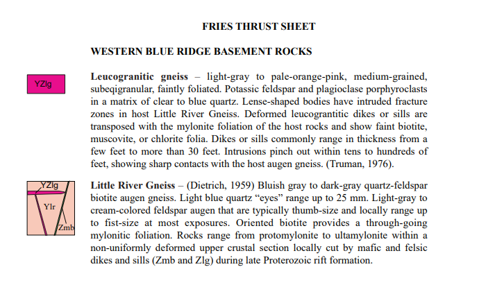
USGS GNULEX database entry for the Fries Thrust Sheet — U-Pb zircon ages converging on 1,116–1,130 Ma.
Patti Boyd Kaygi's structural field maps of the Riner area show mafic dikes and sills — labeled Pz(?)b — intruding through the Precambrian basement rocks on both sides of the fault. These intrusions are the signature of Late Proterozoic rifting: after Rodinia assembled, it began to pull apart, and hot mantle material intruded upward into the crust, leaving trails of iron- and magnesium-rich rock cutting through the older gneiss.
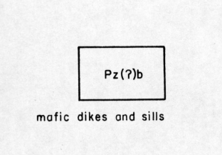
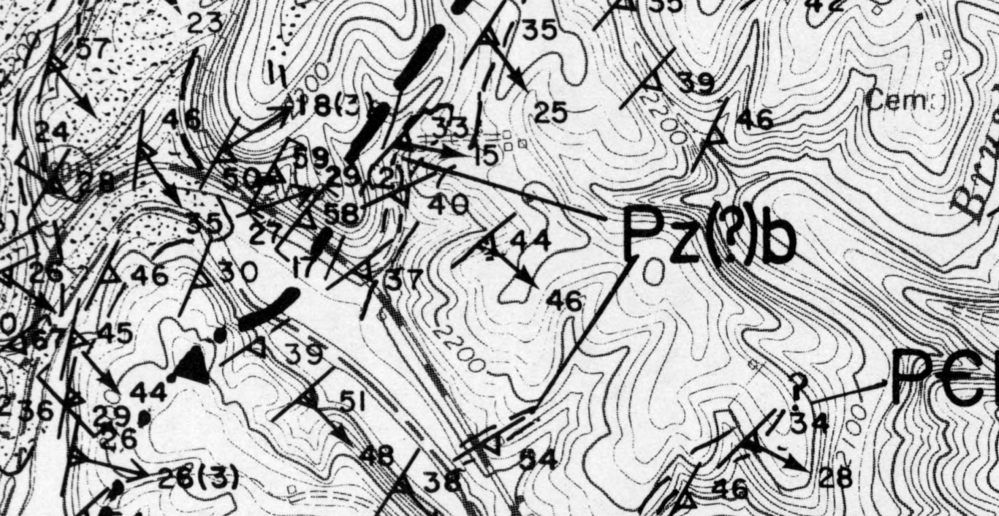
Kaygi field map showing mafic dikes and sills (Pz(?)b) intruding through Precambrian basement rocks at the fault zone — evidence of Late Proterozoic rifting after Rodinia assembled.
Richard Whitmarsh's field maps from his 1994 thesis show the fault trace itself running through the Little River area, with numbered sample collection sites across both the Pilot Gneiss to the north of the fault and the Little River Gneiss to the south. The two units are distinct rock bodies with somewhat different characteristics — the Little River Gneiss a bluish-gray quartz-feldspar biotite augen gneiss (augen, from the German for "eyes," refers to the lens-shaped feldspar crystals visible in the rock's banding), the Pilot Gneiss a pale-orange-pink, medium-grained, faintly foliated rock — yet both are Grenville age and both bear the deformational imprint of the thrust.
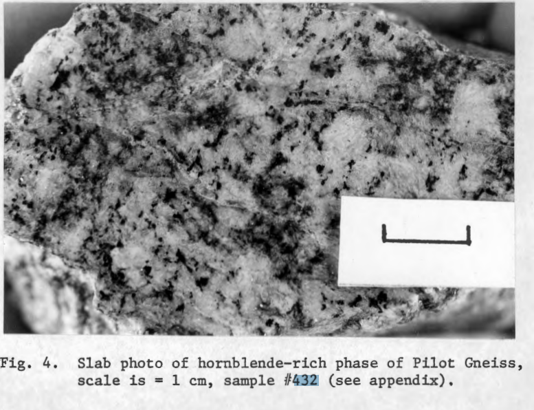
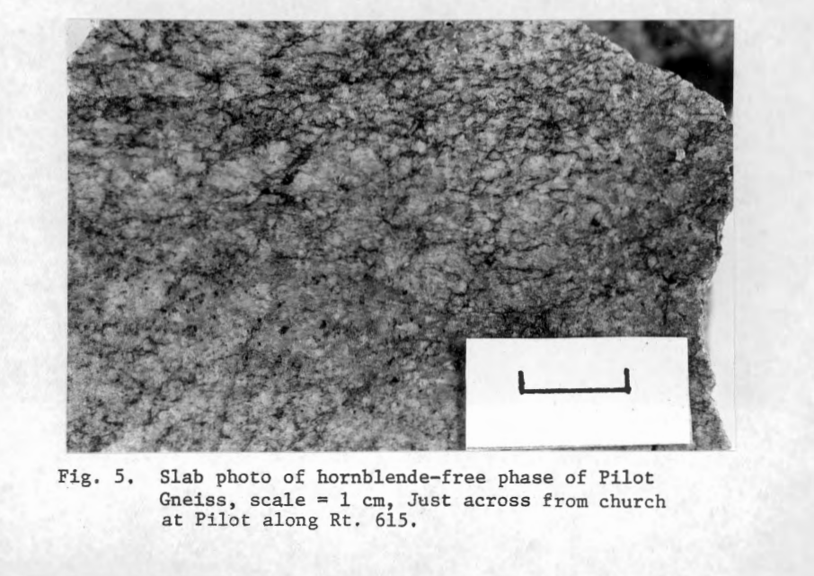
Fig. 4: Hornblende-rich phase of Pilot Gneiss (Sample #432, scale bar = 1 cm). Fig. 5: Hornblende-free phase of Pilot Gneiss, outcrop at Pilot along Rt. 615. (Whitmarsh, 1994)
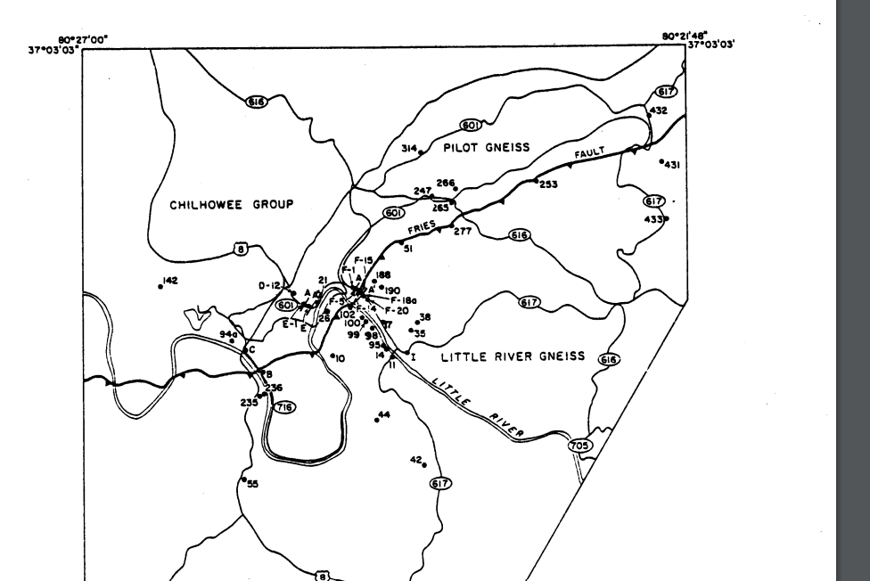
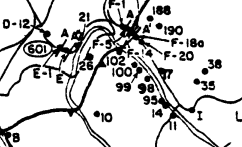
Whitmarsh (1994) sample location map: fault trace ("FRIES") running through the Little River area, with Pilot Gneiss to the north and Little River Gneiss to the south.
All of this — the supercontinent, the Himalayan mountain range, the billion years of burial and erosion and thrust — is still present in the rock. The fault is not a historical event. It is a structural fact, still expressed in the landscape, still shaping the course of rivers, still defining the western edge of the Blue Ridge. The rock on the surface of the ground along Laurel Ridge Mill Road formed in the collision zone of a supercontinent that no longer exists. It has been here, in one form or another, for longer than multicellular life has existed on Earth. You do not need a canyon to find it. It is here. It runs through this land.
Further reading
Academic Papers & Theses
Geological Maps & Field Data
Online References
Mylonite & Saprolite
HFRV Corridor — Comparative Exposures
Video Resources